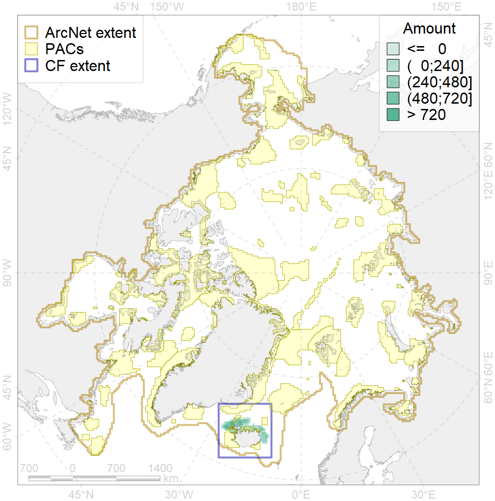
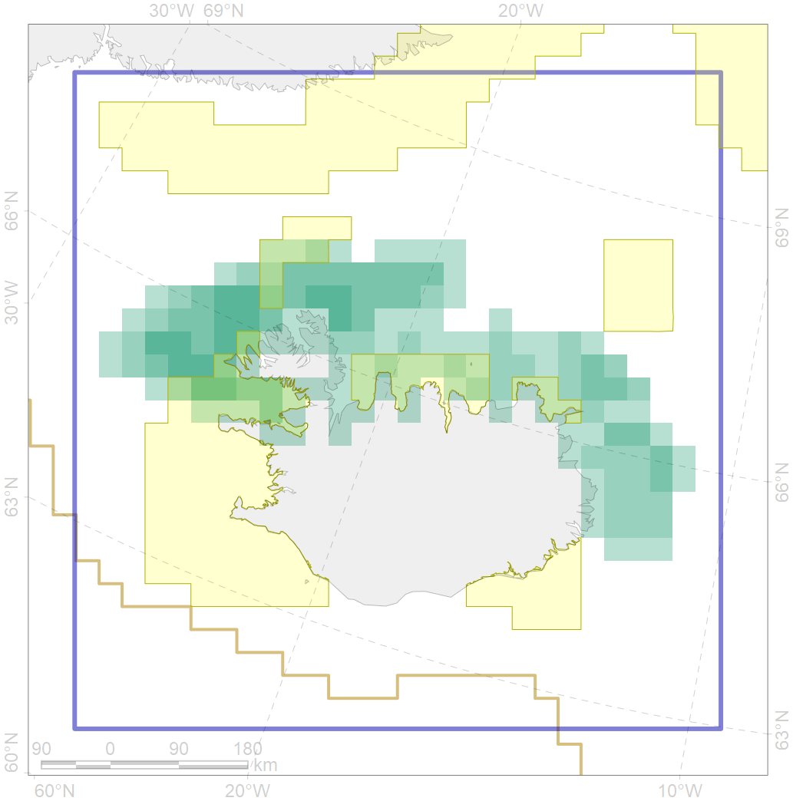

7209

| CF code | 7209 |
| CF name | V.1.1.1. North Iceland medium and low profile shelf |
| Time Period | At least last 100 years |
| Source(s) | Harris et al., 2014; Carmack, Wassmann, 2006 |
| Seasonality | 1-12 |
| Depth Horizon | Sea floor |
| Methodology | Data obtained from the literature |
| Use Restrictions | Open access |
| Author Name | V. Spiridonov, W. Merritt |
| Notes | |
| Scenario’s Target | 0.1370551 |
| Target Achievement | 0.298 (Scenario: 217.6%) |
| PAC | Share of the Total Amount within the PAC | Share of the Target Achievement for the ArcNet | PAC’s Contribution to the Target Achievement |
|---|---|---|---|
| 37 | 3.5%4.8% | 13.2%16.2% | 6.1%7.4% |
| 38 | 10.6%11.8% | 63.6%68.7% | 29.3%31.6% |
| 40 | 0.7%1.1% | 3.9%5.8% | 1.8%2.7% |
| 41 | 3.1%3.6% | 13.6%15.0% | 6.2%6.9% |
| inner | 17.9%21.3% | 94.3%105.7% | 43.3%48.6% |
| outer | 82.1%91.5% | 123.3%175.9% | 56.7%80.8% |
| † supplement values are for area consistence whereas principal values are for Accenter compatible gridded stats |